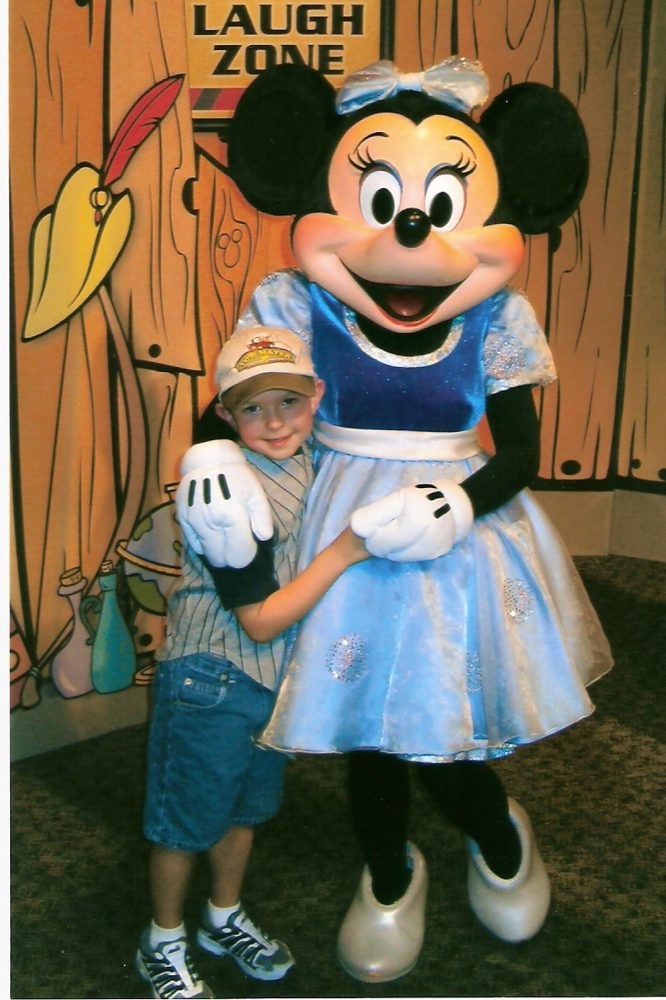
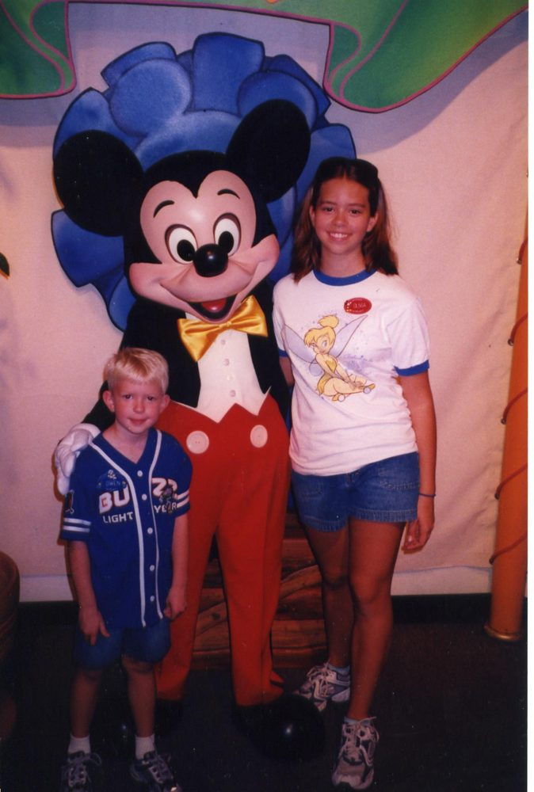

Walt Disney World Trip Nov. 2005
Source: 2005 tripv .doc
Walt Disney World Trip Nov. 2005
Cast: Alan: 36 Lisa: 35 Olivia: 15 Owen: 6
Information, how the trip came about: Deciding when to take this trip was difficult. We went last Nov. and really enjoyed the weather. The past 2 trips before that were in Jan. and we were tired of the cold trips. So November seemed like a good idea again. Plus last year Olivia and I attended the Super Soap Weekend (SSW) for the 1st time ever and had fun. For some reason even though I have been watching these soaps for about 15 years longer then her (she’s watched about 2 years!) she seemed to have the time of her life at SSW! I think it was because to her these people were HUGE stars (well ok, to me too!). So going back in Nov. meant we could be there attend it again.
However, Alan had a chance to attend a convention in Orlando in Jan. 06 and that could mean a cheaper trip. Hmmmmmmmm I was leaning toward Jan. but he just kept reminding me how much Olivia and I enjoyed that SSW! Also he would not know for sure about the convention till late fall. So my thoughts were to plan for a Jan. trip and if it were a business trip we could stay somewhere nicer (Wilderness Lodge was my choice!) and if it turned out not to be a business trip we would just stay at Pop Century again. Then we found out Olivia would be starting drivers education in early Jan. and would be missing 5 days of it! We have no problem pulling her out of regular classes but I really didn’t want her to miss that class. DARN! My brief dreams of the Wilderness Lodge were crushed! But at least Alan would be off on an actual vacation while we were gone and not messing with the convention. Plus we could now plan around SSW!
So in late spring, I think May, we booked 4 Frequent Flier seats to Orlando! We haven’t flown directly into Orlando for years! At least 5 years and maybe more then that! Since we always use the FF miles we can never seem to get non stop flights into Orlando so instead of changing planes we go with nonstop into Tampa. I always felt it was a bit of a pain but now after having completed the trip and flown into Orlando I can honestly say that Tampa airport is so much quieter, uncrowned and stress free!
I also went ahead and booked Pop Century early since we would be arriving for not only SSW but Veteran’s weekend and the end of the Food and Wine Fest! I knew that arrival weekend would be very busy! This trip was going to be a little different then the others because we were staying onsite for 10 nights instead of our usual 7 or so. We would also have 10 day passes thanks to Disney’s new Magic Your Way passes. I really wasn’t happy when they changed the passes because I understood the others and always knew which ones were the best for us. With the change it was one more thing I needed to learn about and figure out what kind of passes to get. We knew we didn’t need the water park ones since we have some of those left on old hoppers and we usually only go with 4 or 5 day hoppers and then have a couple non park days. Most times it is the 5 day passes that we end up with. But when looking at the prices and seeing that the longer you stayed the cheaper the passes got it was easy to pick the 10 days. Plus I was stupid enough to think that this would mean we could take things at a slower pace and not be up and going from dawn till dark! We were all excited about the 10 days though.
As the summer went along my parents talked about going with us. They have no interest in Disney at all but knew the kids would enjoy showing Disney to them. They would only stay 4 or 5 days and only go into the main parks 2 days with one other day at a water park with our extra free water park passes. So I made all our dining reservations trying to decide what days they would join us etc. This was NOT easy making decisions about dining and everything since they don’t tend to plan out there trips they just say lets go somewhere and go! I could tell they thought it was crazy that I needed to know which days they would be with us. They were just thinking that since we’ll be there 10 days they will just show up for 4 or 5 of them. Then after summer vacation was over they decided not to come after all. Something about not ever really wanting to leave home, not sure! HAHA! They are all talk and no action. I think they were afraid of 2 things. #1 that they were going to mess up our plans and #2. that we were going to drag them around and tire them out too much and #3. that they would HATE it! (I only said 2 but I threw that last one in there anyway!) Plus they didn’t want to spend the money, so I guess that makes it 4 reasons!!
I gave them time to change there mind and then eventually called and changed the dining reservations around a bit. I also cancelled their hotel ressie at Pop. I know that made someone out there happy because it was booked solid on some of those nights!
So it is back to just the 4 of us. Although I spent the whole week while we were in Orlando waiting for Alan’s cell phone to ring and them to say “We changed our minds again and we are here!!” This did not happen! We did however, spend the whole time saying things like “OH! Grandma would hate this!” or “That would have scared the crap out of them!” also a few times we said things like “they would have been in bed hours ago!” So they were out of sight but not out of mind!
Dining Plan! Do we or Don’t we????? This was a tough one for me! It was new this year for the big 50th Celebration and EVERYONE online was talking about it. Of course it sounded great but cost too much for us! Then there was the special deal with the FREE dining plan! Now THAT would have been great! I read about everyone who got that deal with SUCH jealousy! But since we weren’t going in the major hurricane season when this was offered that deal wouldn’t be happening for us! Then after that special ended I waited hoping to hear that they were extending it since they had done that back in September. No luck with that one. But then they offered the half price dining offer! Hey not free but I’ll take it! I kept busy with learning all about it and figuring out how to book it. I thought I knew everything about Disney but this was new and I knew nothing!! I was excited and wanted to share my joy with others but I knew no one else cared! As a matter of fact I don’t think I explained it to Alan till the drive to the airport! I knew he wouldn’t listen to me at home and in the car I had a captive audience. Plus this way all the info would be fresh in his brain. I briefly thought of not even bothering with explaining it to him but then realized that there would be times that we would not be together on the trip and I wanted him to know what he was doing! Plus after we used it for the 1st time he would of course be full of questions. He seemed intrigued but was not really excited till we used it the 1st time and he didn’t have to hand over any cash! He always carries all the cash on our trips since I don’t take my purse to the parks and I don’t want to wear a fanny pack. So he always pays for all the meals at Disney and he liked the idea that he didn’t have to fork over all his cash when it was time to pay! On past trips in order to stay on budget we have used the envelope system putting some cash in an envelope labeled with the day on it and keep it in the room safe. Then we have to trek to the ATM after a couple days and restock! But on this trip we didn’t have to do that at all!
To refresh my memory for when I read this years from now the dining plan is that for each day of your stay you get one fast food meal, one sit down meal, and one snack per person per day. With our family of four that will be 4 fast food, 4 sit down and 4 snacks per day. These were totaled up for our 10 night stay and we were given a grand total of 40 dining credits for each of these categories. They could be used in what ever order we wanted we wanted. We didn’t have to use them per day we could use them at a rate of 4 a day or could use 8 in one day and none the next if we wanted. But once those 40 credits for each category were gone we were done and then had to pay for any other food we needed. We (that would actually be ME) planned this out so that we wouldn’t need any other food for our trip other then the dining credits. I know that we always get a little tired of eating the boring breakfast foods in the rooms on our trips so I was hoping that we would be able to share some meals so that we could use our 4 fast food meals allotted for one day by sharing 2 for breakfast and then 2 for lunch! I also planned a couple of breakfast buffet meals since Alan loves his hot breakfasts! But I was determined not to spend any other money on food! The regular price of the dining plan is $35 for adults and $10 for kids. This comes to $115.00 and half price makes it $57.50 a day. The great part about the plan is it covers tax and tip! That tip can really get you on those expensive sit down meals! I will admit that I spent way too much time and energy trying to figure out this dining plan thing though! Where to eat, what places don’t accept it and how to get the biggest bang for our buck! But once we actually got there I was so sick of stressing over the dining plan that I no longer cared about how to get the biggest bang for my buck! I knew were getting a lot more food then we were paying for so I just didn’t care anymore! As long as my 40 credits lasted for the whole 10 days that was all I cared about! I think I was having planning overload with this thing! I was having nightmares about dining credits! I will also say that now that I am back it wasn’t as hard as I made it seem. So for each fast food meal there is one combo meal, one beverage and one dessert. For every sit down meal there is one appetizer (at the majority of the places these are not the size of an appetizer at a regular non Disney type of place, they are smaller.) one main entrée, a beverage and one dessert. Then the snacks that were included were a choice of either a frozen ice cream item like a chocolate Mickey bar, a small popcorn, a bottle of water, bottle of soda, or a piece of fruit or bag of chips. Confused yet??! ME TOO! Ok, on with the story because believe it or not we actually did do more then just eat and add up our credits!!
Wednesday Nov. 9th Leaving for St. Louis airport for park and fly:
Alan worked today and the kids had school but they did get out an hour early and were home about 2:15. Alan also managed to leave early and was home at 3:15. Olivia went straight to her room and worked on some of her homework so we didn’t have to take it all with us. She had already been given some, finished it and turned it in before we left. She ended up only having to bring one big book with us which she read on the plane and that was it. Alan and I finished stuff around here and we all said goodbye to mom and dad and headed out at 4:35pm! We stopped at DQ for dinner to take along because the kids claimed to be hungry already and they were having a dollar sale. (Spent $12.00 and I announced that it was the last cash I intended to spend on food for the next 10 days!) As soon as we got our food we remembered that I forgot my cell phone charger and we stopped back home for that. So now we finally leave town at 5pm. Alan says he has a sore throat! Great!
Owen fell asleep after he ate and slept 45-50 minutes. We entered St. Louis at 6:30pm and decide that since we are ahead of schedule (we weren’t even going to leave home till 6 if Alan hadn’t gotten off early!) we would stop by the JCPenney outlet store not to far out of the way as you enter STL. This would also give some of the traffic time to die down. When we got out of the car at 7pm I told them we didn’t have long as I wanted to be in the hotel room watching LOST at 8pm! I bought Owen 10 shirts for .99 cents each and that was it. Oh, and some undies for myself! By the way the kids threw a HUGE fit that we had to stop and shop! Alan had to remind them that this was HIS vacation too and he will shop if he wants too! (it is very hard keeping a straight face listening to him give that speech! He gives it EVERY trip!) You would think they would learn that dad likes to shop but nope they complain and get yelled at every time anyway.

We pull up to the hotel at 8pm! We are at the Renaissance by the airport. Now is the awful part where we have to unload ALL of our luggage! YUCK! We got a park and fly rate of $79, this is really good for such a nice hotel. Alan checked us in and since he is Platinum we are on the club level so it takes us a minute to figure out the key card in the elevator thing. We dump everything in the room and head straight to the lounge for free drinks. Are we thirsty? NOPE!! but it’s free so we go anyway. We also grab some very yummy cookies too. Owen is smart and takes plenty so he will have some for breakfast. He’s always thinking about his next snack! I love this hotel it has such nice rooms and nice big fancy comfy beds but yet every time we stay here we arrive late at night and check out at the crack of dawn. As a matter of fact we don’t usually see the place in the daylight hours. Owen watches the planes take off and land and I watch the last half of LOST. I missed the 1st half getting cookies and drinks. (shows my priorities doesn’t it!) Oh, and we called mom to let her know we were there! We were so excited about our club level room and free goodies and then my show that we forgot to call. Alan made us all go to bed lights out at 9pm! I was bummed! We had been there barely one hour and I was just starting to have fun but oh well, the kids were out fast though. I will point out though that if it had have been me that wanted to have lights out at 9pm he would have refused!
Alan and I tossed and turned all night. He drives me crazy even though we weren’t even sleeping in the same bed! Also it is a lot harder to kick him when he snores if he is in a different bed. But don’t worry I got out of bed walked over, smacked him and then got back into my bed! (did that twice!) I also had to smack Olivia a few times since she sleeps like some kind of animal!
Thursday Nov. 10th
At 3:30am Olivia and I were woke up to this horribly LOUD noise which freaked us out but turned out only to be Alan blowing his nose! I bet the people in the room next to us wondered what the heck that was! At least he wasn’t snoring! We are now all 3 wide awake for some ungodly reason and Olivia is laughing so hard at that noise that Alan made. She is becoming very rowdy rolling around laughing in bed and getting on my nerves since it seemed like I had just gotten to sleep. The alarm is set for 4:30 and I knew there was not enough time for all 3 of us to shower and leave on time so I jokingly told her that if she was THAT awake maybe she should just go in and take a shower. Well believe it or not she did! We couldn’t believe she actually did that at 3:30am! But since she takes for EVER to bathe Alan and I knew that we could now get a little more sleep and that is what we did. At 4am she was finally done and Alan took his turn. I am not as crazy as them I didn’t budge out of my bed till the alarm went off at 4:30. We didn’t have to leave the hotel till 5:30 so I wasn’t in THAT big of a hurry. Owen of course, sweet boy that he is slept through all of this and some of us weren’t very quiet. By the way Olivia had decided that she was now tired while Alan showered and she laid back down and fell back to sleep. Jeez! At 5:10 we had waited all we could, we were all dressed and ready and it had to be done! We woke sleeping Owen and all stood back expecting him to be ticked off at us but he jumped out of bed like a ray of sunshine and couldn’t have been happier. We all looked at each other amazed. We got him dressed and gave him all of his medicine’s (allergies, asthma and an ear infection!) We left the room at exactly 5:30 just as planned! WOW! I wonder though how all that would have played out if we had all slept till that alarm went off! Not pretty I bet.
Alan stopped by the front desk since they had charged us for parking on our bill and shouldn’t have. Then we loaded onto the shuttle with some pilots and flight attendants. We were dropped off and had to do a head count of all the luggage. We had our new Disney luggage name tags on our bags and Owen really wanted to have HIS tag on the bag which had HIS clothes so he could pull HIS bag. Well the clothes were all mixed up in different bags (I have a fear of lost luggage and one of us with no clothes walking around Disney naked!) so the bag he had his tag on did not have his stuff in it but he thought it did and he took great care of not losing HIS bag! He would also only help out and pull HIS bag. Who knew that a free Disney luggage tag would make him this happy!
We checked in and got rid of all our big bags. We had kept our swimsuits and some emergency personal items in our carryon’s since we were using Disney’s Magical Express bus service from the airport for the 1st time. I waved goodbye to our luggage and prayed that Disney would not let me down and that I would indeed see my stuff again later today. We made it through security, had to remove our shoes though. Then over to Cinnabon for Olivias breakfast. I had brought a package of cinnamon rolls that I bought before we left home at the grocery store so that we wouldn’t have to spend any money on food this morning. However, this wasn’t good enough for Olivia. She didn’t want my grocery store bought rolls she wanted Cinnabon! So I said FINE pay for it yourself then! And she did. Plus she got extra icing. Alan got us a milk to drink and the rest of us suffered through with our cheap rolls which I must say would have been a lot better if we hadn’t have had to look at hers while we ate ours! She spent $4.00 of her money on this and I want it to be known that she had no problem forking over her money to do so. However, it would about another whole week into the trip before the girl would part with any more of her OWN money! She just didn’t want to spend it too soon into the trip. NONE of it! But she claimed that this $4.00 was well worth it!
We were then off to our gate to wait. We boarded and left on time. As soon as we were up in the air Owen wanted to do his homework. Actually I don’t think we were even in the air yet! He has always watched Olivia do homework on other trips and we proud and pleased that he could join in the club! His kindergarten teacher didn’t give him any real homework just some pages that he could do in his spare travel time if he wanted to. But he REALLY wanted to! Alan sat with him and they worked on every single paper he brought. Olivia did her English but she didn’t want to.
We landed on time maybe a few minutes early and went straight (after a REALLY fast potty break) to magical express. We arrived at 10:50am (I checked the clock) there was a line to check in but it moved very fast and then we went to wait in our bus line. It felt like it was taking forever but that was just because we were so excited. The whole wait time combined was about 20 minutes. We loaded on the bus and watched the cute little movie which seemed like a commercial for Disney and I just kept thinking that if anyone is on this bus watching this movie then we have all already bought into the hype and they can stop trying to sell it to us. Pop Century was our 1st stop YEAH! And we arrived at exactly 11:50. As we stood up to exit the bus I asked Alan what time it was and we both realized that it was exactly one hour from when we walked up to the Magical Express check in area. He was impressed and I was relieved! I figured something would go wrong and he would say I knew we shouldn’t have done this! So yeah! Go me!
I headed straight to the check in line leaving him to get the kids, carryons and the stroller from the bus. Olivia helped so it’s not as bad as it sounds. I wanted to get in line before all the other people on that bus!
Our room was ready but they had us on the 3rd floor and I asked about getting a room on the 4th floor. I really hate listening to kids run and jump above me. And if I am going to listen to people above me then I want the convenience of the 1st floor. However, both times we have been at Pop we have been on the 4th floor and not heard any noise. Plus since we are here for 10 nights I really wanted to like my room location. The CM didn’t really want to look for me and told me that they already had this room assigned to me. Well it was noon and a Thursday and I knew there had to be other rooms so I just stood there and finally after a minute he went to go in the back and check. I waited a good while and he finally came out and had one for us on the 4th floor in 70’s. This is our 3rd trip being 4th floor in the 70’s building! Can you tell we don’t like change? At least we know what we are getting.
By the time we are done with this everyone else that had been on our bus that I had gotten in front of in line were all checked in and probably in there rooms! Our room wasn’t ready yet but that was ok with us we had planned ahead for it. I took the kids to the restroom to change into shorts. Then we took our carryons to the storage area. We have never done this here before because our room has always been ready. Also if we had taken the other room on the 3rd floor it was ready now.
The CM who checked us in gave us the room keys and room number even though he said that the room wasn’t ready. Instead of the usual “call back and we will activate the key”. So I said I bet it is ready since he told us the room number etc. But he had made such a big deal that my 3rd floor room was ready and if I wanted 4th floor I would have to wait for it. So we took a little walk and went to find the room. The maids cart was right next door to our room so I figured she had just finished it. I put the card in, opened the door and NOPE! Thankfully there was no one in the room but it hadn’t been cleaned yet either! We quickly got out of there.
Now the moment we’ve all been waiting for…………… nope not a ride………. Nope not a theme park ………. Nope not the pool……….. our 1st use of the dining plan and I’m hoping that I actually know how to use it and that it works like I think it will?! Ok, not all of us had been waiting for this but I had. I just wanted to use it that 1st time to get it over with. I guess just to make sure like I said that it works, and that I know how it works and that it wasn’t a big mistake!
Now my mind twisting plan was that instead of telling them that we are all going to share 2 meals that I will just let everyone order what they want this 1st time and prove to them that it is too much food! That way I save the argument and I will not be being a bossy know it all! However, Olivia isn’t very hungry (guess is was the $4 Cinnabon!) and decides to share an adult sized chicken strips meal with Owen. They did this several times on our last trip. So that is what they had. I had a cheeseburger and Alan had a cheese steak sandwich. The kids had a carrot cake to split. I had one too and shared some of mine with them too. Alan had cheesecake. And YES he and I agreed that it was too much food. I acted just as surprised as him! (Our lunch bill would have been $30 something dollars but I didn’t write down the exact amount.) So now when I mention sharing something he won’t argue and he will realize I am right! Yes, I had to waste and extra dining credit on this meal to make that point but it was worth it to me. Later you will see though that his food tastes and mine are not the same and there were plenty of times we didn’t share!

At 1:30 we left for the Magic Kingdom. We waited a long time for a bus. There were 3 for Animal kingdom and 2 for MGM. They were all looking at me like maybe we should just take one of those but the kids like to hit MK 1st and so do I. Plus that is where our dinner ressie is at and they can’t start messing with my plans yet! It’s only the 1st day and I’ve worked way too hard.
We arrive about 2:15 and go to Splash Mountain and get fast passes for 4:30. The crowds were very big there was a 60 minutes wait for splash. We went over and got on Pirates with a short wait since the afternoon parade had just started. We also got on the jungle cruise with a short wait too. Owen is funny on this since he seems to think everything he is seeing is real. By now the parade is over and we for some dumb reason head to fantasyland where we find a 20 minute wait for Small World! Timed it just right though for walking right into Donald’s Philharmagic.
After this we walked back so that Owen could ride Goofy’s Barnstormer. When we ended our last trip we closed down the park with Owen finally being brave enough to LOVE this ride! He and Olivia rode it about 10 times in a row that night. So that this where he wanted to go again. On our way we passed the Tea Cups with not too long of a line and Olivia tried to talk him into riding it with her but he was NOT interested at all! On to Barnstormer and we find a 45 minute wait! We told him that it was just too long of a wait and that we would be here for 10 days so he would have plenty of chances to ride it.
We had given the little speech before arriving to the park today that it was a going to be busy with the holiday weekend coming up but that we would just ride the things that didn’t have a long wait and then come back after the busy weekend was over for lots of other rides! We also were having a character dinner tonight and with our early flight this morning we weren’t planning a late night or anything.
This speech of course meant nothing to Owen. At 6 years old all you really want to do is ride and since he’s use to the slow season of no long lines he doesn’t seem to get it. But we know better then to get in a 45 minute line with a kid who never waits more then about 10-15 at the most for a ride.
Back to the teacups and out of protest I guess?? Owen refused to ride it. So Olivia and I rode by ourselves. While the boys just watched and waited on a bench. Why he wouldn’t ride I do not understand. We made our way over to use our fast pass for Splash! Owen finally LOVES this ride. He declared it his favorite! Yeah! Once we were done it was time to head to our 5pm dinner and then the plan was to leave the park to check on the luggage, unpack and not be out late tonight. But when we got off splash we decided to get another fast pass since the return time was for roughly the time we would be done with dinner and we could get in one more ride. (this was my idea not Alan’s he was more interested in leaving since he wasn’t feeling that great but he got the FP’s for us anyway!) He had to fight through some major crowds around that area to go get those passes.
Now on to Liberty Tree Tavern for our character dinner. We have never eaten here before but always walk by and wonder if it is good. Alan checked us in and I took the kids upstairs to the bathroom. This place needs a bigger bathroom! I think there were 2 stalls and a line of at least 6 people waiting to get in. By the time we were all done and back downstairs Alan had been waiting for us because our table was ready. We were in a room in the back of the place and there were some little kids in there screaming like you wouldn’t imagine! We were thrilled to see they were almost done eating! This is an all you can eat meal that is brought out to your table served family style. We had the salad 1st which we all hated! YUCK! I know a lot of people talk about liking this salad with that dressing but we did not. We also had dinner rolls, Turkey, ham, stuffing, mashed potatoes, gravy, green beans, and mac & cheese. That is all I remember but there may have been more. Owen doesn’t like the turkey and we all declared the ham to be gross it had a strange taste. So we asked about something else for him and they brought out some corn dog nuggets. This took awhile though and he was starting to look like his long day was catching up with him. When they brought his corn dog he proceeded to take the dog out of it and just eat that! He could have just ordered a hot dog!? Silly child! They brought out dessert and we had a cherry cobbler with ice cream. Owen of course just had the ice cream. We got to see Pluto, Goofy, Chip, Dale and Minnie while eating too.
I should mention that Alan doesn’t like turkey so he didn’t care too much for this meal since the ham was not good and none of us ate it. He also was feeling like crap with a bad sore throat and all stuffed up. I however LOVE turkey so I was happy! Olivia and I really liked the turkey, mashed potatoes and gravy and had a good time chowing down! When we got our bill for the meal our 1st expensive one on the dining plan it was right around $100.00! Alan no longer cared that he didn’t LOVE the meal he now LOVED the dining plan! HA! I should say that they bring you out a bill of what your bill would be with tax, tip etc. and you sign it then you keep the copy that shows you were not charged and the total was now $0.00. So even though Alan didn’t care for this meal he was happy now anyway. I didn’t expect it to be our favorite meal but I wanted to try some different places and there aren’t a lot of sit down choices in the MK.
So we head back over to Splash and ride with only about 10 minutes to hang around and wait for our fast pass time to be up. By the time we were done it was about 7pm and we headed out of the park. Took the bus back and went to see our room. As we opened the door we prayed that our luggage would be there and it WAS! YEAH! We counted and all 9 or so pieces of big luggage and carryon’s were there. Now came the bad part! Unpacking ALL of this stuff, at least Alan helped me for the 1st time ever but I am not sure how much was help and how much was just being in my way! This process took at least an hour and a half and at one point when I was close to being done Alan and the kids went down to the food court with our mugs to get drinks and brought one back for me. Then he had the job of blowing up Lib’s air mattress that she gets to sleep on for 10 nights! It is comfortable (she has admitted it) but she complains anyway. We finally settled down and watched TV while I wrote some notes from today’s travels and then went to sleep!
Friday Nov. 11th
No alarm today since we had an early day yesterday and had no major plans this morning. Slept in a little then got dressed and ready. We went down to the food court for our breakfast. This is not usual for us it is usually pop tarts and cereal in the room. However, with the dining plan we are mixing things up a bit. Alan loves his breakfast foods Olivia and I even made fun of him later in the week saying that nothing comes between dad and a breakfast buffet! This morning we all order breakfast and using 4 dining credits. Our plan is a big breakfast with no lunch and then a 6pm dinner. We had a variety but there were eggs, bacon, sausage, waffles, biscuits and chocolate milk and OJ. This was not bad for counter service but was a pain to order at all the different stations and then check out together.
We now are headed to Epcot today and we arrived at 10:30 am. Our only goal for the day was to get a fast pass for Soarin! Then we were going to just take in what ever didn’t have a long line, spend some time at the Food and Wine Festival and have dinner at LeCellier in Canada tonight. We head straight for Soarin only to find that all the FP’s are gone for the day already! There is also a 2 hour stand by line! Alan is NOT happy and neither are the rest of us but he did not take this as well as Owen took missing out on Barnstormer last night. We had to have the same talk with Alan reminding him that we had a whole 9 days and we would get our chance later. I will say that I could not believe that FP’s were completely gone at 10:30 in the morning. We expected a long return time like any time this evening but nope! Alan doesn’t take no for an answer well! With his work he’s very much the “let me speak to your supervisor” type but that doesn’t work here!
We were like lost puppies and didn’t know what to do next. The crowds were horrible! It just seemed like people were everywhere. I can say that we have NEVER been to Epcot when it was this crowded. We took a minute to think over the plan. Do we leave and go to MGM? Will that be just as bad? Probably plus we will waste at least 30 minutes getting there. We have a rental car reservation for tomorrow so we thought we would call and see if we could pick it up a day early and go do some outlet shopping and other things offsite and just escape the crowded parks completely. Alan calls and finds out they have NO cars until tomorrow so that plan is out. While he is on the phone we realize it is getting pretty darn warm out and so I suggest going back to the hotel and swimming for the afternoon then coming back tonight for our dinner plans. Owen is game (he’s always up for a swim or a snack!) and I think I could have gotten Lib on my side, she wasn’t sure if she wanted to or not. However, Alan was not interested in this idea at all. Notice how he was ok with the rental car/shopping plan but not the swimming plan! I think it was because we had just gotten dressed, combed and curled and left the room and not done anything yet so going back would have made the past 2 hours a total waste of time. I realized that but now that this trip is over one of the things I would have done differently is put my big foot down and said we’re leaving!! The whole part of the 10 day trip and 10 day passes was to come and go as we pleased, to be able to spend the day by the pool and the evening in Epcot. I know people do this I have read about it in trip reports!! (and been jealous of their leisurely pace). Perhaps if I had said that was the plan to begin with and we would have eaten breakfast and then went swimming for a few hours then he wouldn’t have questioned me! We could have then went to Epcot about 3-4pm. He never seems to question my daily schedules but I just thought sleeping in, late big breakfast, FP for Soarin, some Food and Wine snacks followed my the dinner in Canada sounded like such a nice plan. I knew when making the plan that the parks would be crowded but being there in the crowds is a whole different thing! It was also one of the warmest days we had in the whole 10 days!
I have dwelled on this long enough. I sulked while we went and picked up Fast Passes for Test Track. But we then spent the afternoon wandering around Innoventions sending a lot of silly email postcards. And doing some other stuff they have there then we go and ride the Figment ride which we haven’t done in about 10 years and I have no memory of really ever doing? Then on to World Showcase. We wondered along through the countries and tried a few things at the Food and Wine Festival booths. I thought it was great we could use our snack credits for this however, the lines at all the booths were a little long. Alan, Lib and I each had a shrimp on the Barbie, we also had some bottled waters. (did I mention this was a hot day?) Owen got a Kaki Gori (LARGE snow cone) this was only $2.25 and was the best money we spent the whole 10 days! This thing was so good! Who knew shaved ice and flavoring could taste so good! Lib took one bite and got one too. I wanted one too and I could tell Alan did too but he was giving me the “I had to pay cash for this, they don’t take the dining snack credits look” and even though I said I wasn’t spending money for food there are SOME times you must break the rules! So instead I just keep stealing bites of Lib’s which is only fair since she had stolen some bites of Owens. We’ve been coming here since 1993 and never had these before!
After this we went and tried the Chicken Sha Cha with peanut sauce over in China. Alan waits in the line for it and Lib is looking over the samples to see if it looks like something she wants. Owen and I are searching hard for some shade so we can eat our snack. Alan waits in that long line only to show up with ONE count it ONE chicken sampler! HELLO!! It is sized for one person to eat it not 3! Plus you didn’t have to pay the cash price of $3.50 for this item it was bought with the snack credits! He is used to paying for these items at Food and Wine fest. and us being cheap and sharing them all the time but not this time and plus Lib was eating with us too! So the THREE of us took a tiny nibble and it was gone! He says you want me to get another one? Once again HELLO did you not see that line that you stood in? I just didn’t understand his cheapness there was no need for it! (Also at the end of our trip we had snack credits left over which wouldn’t have happened if he would not have been so tight with them!)
We now realized that it was almost time for the Candy lady in Japan. Last year she made something for Lib but Owen slept through the whole thing so we wanted him to see her. Well we were clear over in China and now had to hurry back to Japan so Owen could be front and center and get chosen. Well Alan took off with him and Lib and I were sweltering a bit and my feet were bugging me. I had on my new Crocs for the very 1st time today and so far I wasn’t loving them! (that will change) They take some getting used to. Plus I was a little irked at Alan. So Lib and I walk along fighting our way through the huge crowds and just as we are entering back into Japan we pass the Kaki Gori snow cone stand so I am hot and I don’t have Alan around to stop me so of course I bought one!! As I came wondering up to where they are waiting for the Candy Lady I could tell Alan was jealous that I had one and he didn’t or maybe he was just mad that I had spent $2.25. Either way I could have cared less and I didn’t share with him either. Lib however took plenty of bites of mine since I had some of hers earlier. We are such a strange family. A normal family would have just all had one of these snacks each to begin with and sat down and enjoyed it together. But instead we eat one at a time and give dirty looks over shared bites of snow cone! Awww good times!